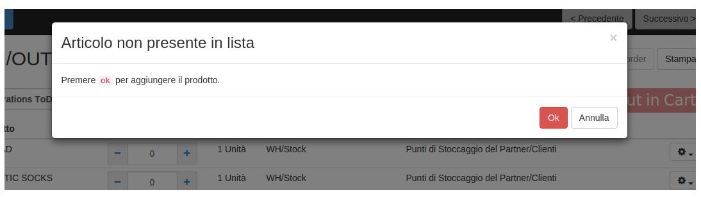

Decrizione inserimento per Barcode

A questo punto si ha la lista dei prodotti, in cui:
- La colonna "Da fare" contiene la quantitá massima disponibile per prodotto
- Il riquadro "Scanned" indica la quantitá richiesta per prodotto

- Una volta che viene acquisito il codice, la riga relativa al prodotto si posiziona automaticamente e se la quantitá richiesta risulta minore o uguale a quella disponibile, la riga verrá lampeggiata e sará visualizzata in verde.

- Se invece la quantitá richiesta risulta maggiore di quella disponibile, la riga verrá visualizzata in rosso.

- Se invece viene acquisito il codice di un prodotto non presente nell ordine di vendita, verrá data la possibilitá di aggiungere il prodotto alla lista.

-
Inizialmente bisogna impostare dei parametri sotto: "Configurazione" -> "Aziende" -> "Configurazione barcode" :
e riguardano i suoni emessi se un prodotto non esiste nell ordine di vendita e se la quantitá da evadere
risulta maggiore di quella pianificata.